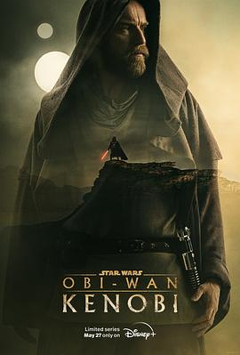

欧比旺 / Obi-Wan Kenobi
又名：欧比-旺·克诺比 / 星球大战外传：欧比旺 / 欧比王·肯诺比(港/台)
星球大战宇宙真香系列，目前还是曼达洛人最香。因为正传没看完，导致不知道俩娃身份😅 又得去补了。总体来说还是很精彩的。
作品信息
| 导演 | 黛博拉·周 |
| 编剧 | 卓比·哈罗德 / 汉娜·弗里德曼 / 侯赛因·阿米尼 / 斯图尔特·贝亚蒂耶 / 安德鲁·斯坦顿 / 乔治·卢卡斯 |
| 主演 | 伊万·麦克格雷格 / 海登·克里斯滕森 / 詹姆斯·厄尔·琼斯 / 维维恩·莱拉·布莱尔 / 摩西·英格拉姆 / 库梅尔·南贾尼 / 连姆·尼森 / 伊恩·麦克迪阿梅德 / 姜成镐 / 因迪拉·瓦玛 / 鲁伯特·弗兰德 / 本·萨弗迪 / 乔尔·埃哲顿 / 邦妮·皮耶斯 / 格兰特·菲利 / 吉米·斯密茨 / 西蒙娜·凯塞尔 / 特穆拉·莫里森 / 伊斯特·麦克格雷格 / 小奥谢拉·杰克逊 / 玛里塞·阿尔瓦雷斯 / 玛雅·厄斯金 / 莱亚·吉斯特德 / 赖德·麦克劳克林 / 弗利 / 扎克·布拉夫 / 邱明 / 威尔·韦斯特沃特 / 约翰·罗森格兰特 / 尹查理 / 德里克·巴斯科 |
| 类型 | 动作 / 科幻 / 冒险 |
| 制片国家/地区 | 美国 |
| 语言 | 英语 |
| 首播 | 2022-05-27(美国) |
| 集数 | 6 |
| 单集片长 | 36-55分钟 |
| IMDb | tt8466564 |
说过什么
2023-04-22 09:50:26
看过 · 时间来自广播，短评来自标记页
星球大战宇宙真香系列，目前还是曼达洛人最香。因为正传没看完，导致不知道俩娃身份😅 又得去补了。总体来说还是很精彩的。
2023-04-16 15:26:21
广播 · 在看
星球大战宇宙真香系列，目前还是曼达洛人最香
2021-02-02 13:10:30
广播 · 想看
最后一次看到是 2026-08-01T11:04:50+10:00 · 豆瓣原页